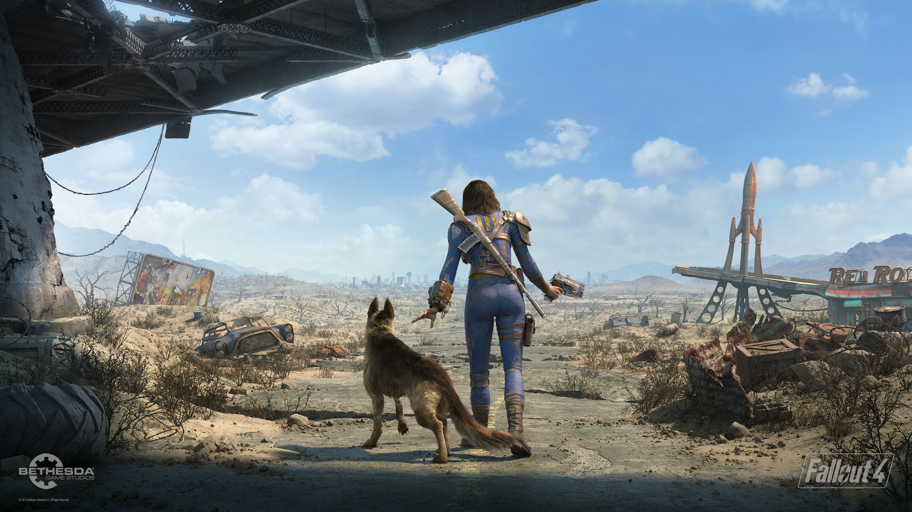

Bethesda planea llevar Fallout 4 Anniversary Edition a Nintendo Switch 2
Un informe reciente asegura que Bethesda Softworks prepara una adaptación de *Fallout 4 Anniversary Edition* para la futura Nintendo Switch 2. Esta versión aprovecharía el nuevo hardware híbrido de Nintendo, manteniendo los 60 fps y mejorando el rendimiento gráfico gracias a una optimización profunda del motor Creation Engine 2.
Fuentes cercanas al proyecto indican que incluirá todos los DLC, soporte para el sistema *Creations* —plataforma oficial de mods del juego— y compatibilidad con funciones táctiles y giroscópicas. El objetivo sería ofrecer la experiencia completa de *Fallout 4* en modo portátil, sin sacrificar fidelidad ni fluidez.
De confirmarse, marcaría el regreso triunfal de la saga *Fallout* a una consola de Nintendo tras casi 20 años de ausencia. Además, reforzaría la estrategia de Microsoft de expandir su catálogo a nuevos públicos sin perder calidad técnica. Los fanáticos ya especulan con que este podría ser el primer paso hacia una futura versión de *Starfield* en Switch 2.